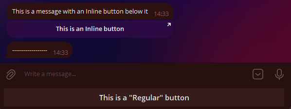
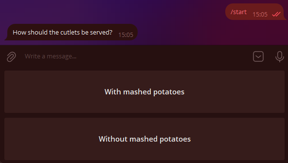
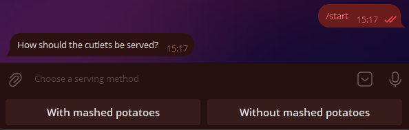
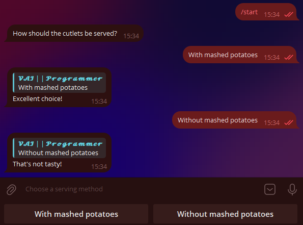
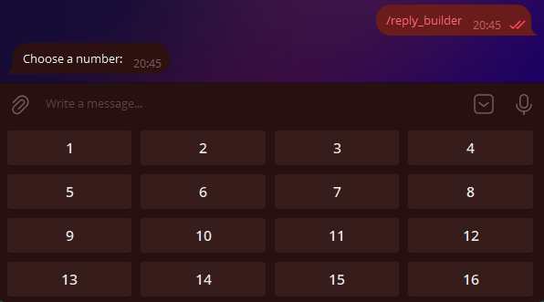
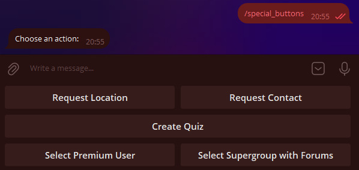
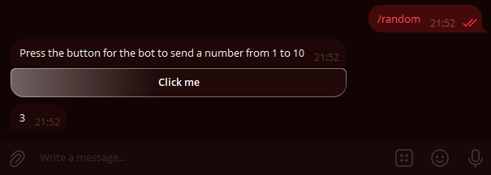
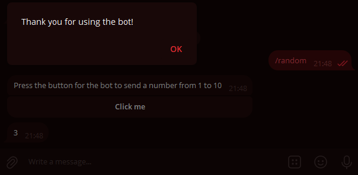
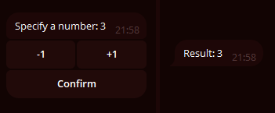
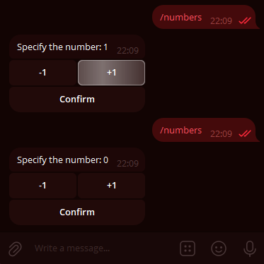

Buttons¶
Using aiogram version: 3.7.0
Tested on aiogram version: 3.21.0 | 07.07.2025
In this chapter, we will explore the wonderful feature of Telegram bots known as buttons. First, to avoid confusion, let's define the terms. What attaches to the bottom of your device's screen, we'll call regular buttons, and what attaches directly to messages, we'll call inline buttons. Here's a picture to illustrate:

P.S: Recreated by the translator.
I had to recreate this code since it was not originally in the guide. :(
@dp.message(Command("buttons_example"))
async def examples_buttons(message: types.Message):
kbr = types.ReplyKeyboardMarkup(
keyboard=[
[
types.KeyboardButton(
text='This is a "Regular" button'
)
]
],
resize_keyboard=True
)
kbi = types.InlineKeyboardMarkup(
inline_keyboard=[
[
types.InlineKeyboardButton(
text='This is an Inline button',
url="https://vadim-khristenko.github.io/aiogram-3-guide/en/buttons/"
# Failure to specify one of the Optional parameters will
# result in an error.
)
]
]
)
await message.answer(
text="This is a message with an Inline button below it",
reply_markup=kbi
)
await message.answer(
text="------------------",
reply_markup=kbr
)
Regular Buttons¶
Buttons as Templates¶
This type of button appeared with the Bot API back in 2015 and is essentially message templates (with a few special cases, which we'll discuss later). The principle is simple: whatever is written on the button will be sent to the current chat. Accordingly, to handle the pressing of such a button, the bot needs to recognize incoming text messages.
Let's write a handler that will send a message with two buttons when the /start command is pressed:
@dp.message(Command("start"))
async def cmd_start(message: types.Message):
kb = [
[types.KeyboardButton(text="With mashed potatoes")],
[types.KeyboardButton(text="Without mashed potatoes")]
]
keyboard = types.ReplyKeyboardMarkup(keyboard=kb)
await message.answer(
"How should the cutlets be served?",
reply_markup=keyboard
)
Although the Telegram Bot API allows using plain strings instead of KeyboardButton objects,
attempting to use a string in aiogram 3.x will throw a validation error.
This is not a bug, but a feature.
Why does a validation error occur?
Translated by VAI. Source
Gabben, [29.12.2021 12:35]
Instead of "1", you need to use KeyboardButton(text="1").
Groosha, [29.12.2021 12:35] Then it looks like an issue with Aiogram.
Gabben, [29.12.2021 12:37] This will break our codegen.
Now you have to live with it 🤷♂️
Alright, let's run the bot and marvel at the enormous buttons:

It doesn't look very neat. Firstly, we want to make the buttons smaller, and secondly, arrange them horizontally.
Why are they so big in the first place? The thing is, by default,
the "button" keyboard should take up as much space on smartphones as the regular letter keyboard.
To reduce the size of the buttons, you need to specify an additional parameter resize_keyboard=True to the keyboard object.
But how do you replace vertical buttons with horizontal ones?
From the perspective of the Bot API, a keyboard is an array of arrays of buttons,
or to put it simply, an array of rows. Let's rewrite our code to make it look nice,
and for added emphasis, we'll add the input_field_placeholder parameter,
which will replace the text in the empty input field when the regular keyboard is active:
@dp.message(Command("start"))
async def cmd_start(message: types.Message):
kb = [
[
types.KeyboardButton(text="With mashed potatoes"),
types.KeyboardButton(text="Without mashed potatoes")
],
]
keyboard = types.ReplyKeyboardMarkup(
keyboard=kb,
resize_keyboard=True,
input_field_placeholder="Choose a serving method"
)
await message.answer(
"How should the cutlets be served?",
reply_markup=keyboard
)
Looking at it now — it indeed looks nice:

All that's left is to teach the bot to respond to pressing such buttons.
As mentioned earlier, you need to check for an exact text match.
We'll do this using the magic filter F, which we'll discuss in another chapter:
# new import!
from aiogram import F
@dp.message(F.text.lower() == "with mashed potatoes")
async def with_puree(message: types.Message):
await message.reply("Excellent choice!")
@dp.message(F.text.lower() == "without mashed potatoes")
async def without_puree(message: types.Message):
await message.reply("That's not tasty!")

To remove the buttons, you need to send a new message with a special "removing" keyboard of type ReplyKeyboardRemove.
For example: await message.reply("Excellent choice!", reply_markup=types.ReplyKeyboardRemove())
Keyboard Builder¶
For more dynamic button generation, you can use a keyboard builder. The following methods will be useful:
add(<KeyboardButton>)— adds a button to the builder's memory;adjust(int1, int2, int3...)— arranges rows withint1, int2, int3...buttons;as_markup()— returns the ready keyboard object;button(<params>)— adds a button with specified parameters, automatically determining the button type (Reply or Inline).
Let's create a numbered keyboard of size 4×4:
# new import!
from aiogram.utils.keyboard import ReplyKeyboardBuilder
@dp.message(Command("reply_builder"))
async def reply_builder(message: types.Message):
builder = ReplyKeyboardBuilder()
for i in range(1, 17):
builder.add(types.KeyboardButton(text=str(i)))
builder.adjust(4)
await message.answer(
"Choose a number:",
reply_markup=builder.as_markup(resize_keyboard=True),
)

The ReplyKeyboardMarkup object also has two useful options:
one_time_keyboard for automatically hiding the keyboard after a button is pressed,
and selective for displaying the keyboard only to certain members of a group.
Their usage is left for self-study.
Special Regular Buttons¶
As of the writing of this chapter, Telegram supports six special types of regular buttons that are not just regular message templates. They are designed for:
- Sending the current location;
- Sending the user's contact with a phone number;
- Creating a poll/quiz;
- Selecting and sending user data to the bot based on specified criteria;
- Selecting and sending (super)group or channel data to the bot based on specified criteria;
- Launching a WebApp.
Let's discuss them in more detail.
Sending Current Location: This is straightforward; it sends the user's current coordinates. This is static location data, not the Live Location, which updates automatically. Users can fake their location at the system level (Android).
Sending User Contact with Phone Number:
When the button is pressed (with prior confirmation),
the user sends their contact with a phone number to the bot.
Users can ignore the button and send any contact,
but you can handle this by verifying in the handler
or filter that message.contact.user_id == message.from_user.id.
Creating a Poll/Quiz:
When the button is pressed, the user is prompted to create a poll or quiz,
which is then sent to the current chat.
You need to pass a KeyboardButtonPollType object.
The optional type argument specifies the poll type (poll or quiz).
Selecting and Sending User Data to the Bot: Displays a window to select a user from the chat list of the user who pressed the button. You need to pass a KeyboardButtonRequestUser object with a generated request ID and criteria, such as "is bot," "has Telegram Premium," etc. After selecting a user, the bot receives a UserShared service message.
Selecting and Sending Chat Data to the Bot: Displays a window to select a chat from the chat list of the user who pressed the button. You need to pass a KeyboardButtonRequestChat object with a generated request ID and criteria, such as "is a group or channel," "user is chat creator," etc. After selecting a chat, the bot receives a ChatShared service message.
Launching a WebApp: When the button is pressed, it opens a WebApp. You need to pass a WebAppInfo object. WebApps will not be covered in this book.
Here's some code for illustration:
@dp.message(Command("special_buttons"))
async def cmd_special_buttons(message: types.Message):
builder = ReplyKeyboardBuilder()
# The row method explicitly forms a row
# of one or more buttons. For example, the first row
# will consist of two buttons...
builder.row(
types.KeyboardButton(
text="Request Location",
request_location=True
),
types.KeyboardButton(
text="Request Contact",
request_contact=True
)
)
# ... the second row consists of one button ...
builder.row(types.KeyboardButton(
text="Create Quiz",
request_poll=types.KeyboardButtonPollType(type="quiz"))
)
# ... and the third row again consists of two buttons
builder.row(
types.KeyboardButton(
text="Select Premium User",
request_user=types.KeyboardButtonRequestUser(
request_id=1,
user_is_premium=True
)
),
types.KeyboardButton(
text="Select Supergroup with Forums",
request_chat=types.KeyboardButtonRequestChat(
request_id=2,
chat_is_channel=False,
chat_is_forum=True
)
)
)
# No WebApps yet, sorry :(
await message.answer(
"Choose an action:",
reply_markup=builder.as_markup(resize_keyboard=True),
)

Finally, two handler templates for handling button presses from the bottom two buttons:
# new import
from aiogram import F
@dp.message(F.user_shared)
async def on_user_shared(message: types.Message):
print(
f"Request {message.user_shared.request_id}. "
f"User ID: {message.user_shared.user_id}"
)
@dp.message(F.chat_shared)
async def on_chat_shared(message: types.Message):
print(
f"Request {message.chat_shared.request_id}. "
f"Chat ID: {message.chat_shared.chat_id}"
)
Inline Buttons¶
URL Buttons¶
Unlike regular buttons, inline buttons are attached not to the bottom of the screen but to the message they were sent with. In this chapter, we will look at two types of such buttons: URL and Callback. Another type — Switch — will be considered in the chapter on inline mode.
Login and Pay buttons will not be covered in this book at all. If anyone is willing to help with at least working code for authorization or payment, please create a Pull Request on GitHub. Thank you!
The simplest inline buttons are of the URL type, i.e., "link". Only HTTP(S) and tg:// protocols are supported.
# new import
from aiogram.utils.keyboard import InlineKeyboardBuilder
@dp.message(Command("inline_url"))
async def cmd_inline_url(message: types.Message, bot: Bot):
builder = InlineKeyboardBuilder()
builder.row(types.InlineKeyboardButton(
text="GitHub", url="https://github.com")
)
builder.row(types.InlineKeyboardButton(
text="Official Telegram Channel",
url="tg://resolve?domain=telegram")
)
# To be able to show the ID button,
# The user must have the has_private_forwards flag set to False
user_id = 1234567890
chat_info = await bot.get_chat(user_id)
if not chat_info.has_private_forwards:
builder.row(types.InlineKeyboardButton(
text="Some User",
url=f"tg://user?id={user_id}")
)
await message.answer(
'Choose a link',
reply_markup=builder.as_markup(),
)
Let's take a closer look at the middle block of code. The fact is that in March 2019,
Telegram developers added the ability to disable user profile
links in forwarded messages. When trying to create a URL button with a user ID who has disabled forwarding links,
the bot will receive an error Bad Request: BUTTON_USER_PRIVACY_RESTRICTED.
Therefore, before displaying such a button, it is necessary to check the state of this setting.
To do this, you can call the getChat method and check the state of the has_private_forwards field
in the response. If it is True, then the attempt to add a URL-ID button will result in an error.
Callbacks¶
There isn't much more to discuss about URL buttons, so let's move on to the highlight of today's program — Callback buttons. These are very powerful and can be found almost everywhere. Reaction buttons on posts (likes), menus in @BotFather, etc. The essence is that callback buttons have a special value (data) by which your application recognizes what was pressed and what needs to be done. Choosing the right data is very important! It is also worth noting that, unlike regular buttons, pressing a callback button allows you to do almost anything, from ordering pizza to launching computations on a supercomputer cluster.
Let's write a handler that will send a message with a callback button on the /random command:
@dp.message(Command("random"))
async def cmd_random(message: types.Message):
builder = InlineKeyboardBuilder()
builder.add(types.InlineKeyboardButton(
text="Press me",
callback_data="random_value")
)
await message.answer(
"Press the button for the bot to send a number from 1 to 10",
reply_markup=builder.as_markup()
)
But how do we handle the press? If earlier we used a handler on message to handle incoming messages, now
we will use a handler on callback_query to handle callbacks. We will focus on the button's "value", i.e., its data:
@dp.callback_query(F.data == "random_value")
async def send_random_value(callback: types.CallbackQuery):
await callback.message.answer(str(randint(1, 10)))

Oh, why is the button pulsing with white? It turns out that the Telegram server is waiting for us to confirm the delivery of the callback, otherwise, within 30 seconds, it will highlight the button with an animated effect (pulsing white or in a different color depending on the client theme). To stop this animation, you need to call the answer() method on the callback (or use the API method answer_callback_query()). In general, you can call the answer() method without any arguments, but you can also call a special window (pop-up or overlay):
@dp.callback_query(F.data == "random_value")
async def send_random_value(callback: types.CallbackQuery):
await callback.message.answer(str(randint(1, 10)))
await callback.answer(
text="Thank you for using the bot!",
show_alert=True
)
# or just await callback.answer()

The reader may wonder: at what point in the processing should we respond to the callback with the answer() method? In general, the main thing is to simply not forget to inform Telegram about receiving the callback request, but I recommend placing
the answer() call at the very end, and here's why: if an error occurs during the callback processing and
the bot encounters an unhandled exception, the user will see the pulsing button animation for half a minute and understand that something
is wrong. Otherwise, the animation will stop, and the user will remain unaware of whether their request was successfully processed or not.
Note
In the send_random_value function, we called the answer() method not on message, but on callback.message. This is because
callback handlers work not with messages (type Message),
but with callbacks (type CallbackQuery), which have different fields, and
the message itself is just a part of it. Also, note that message is the message to which the
button was attached (i.e., the sender of such a message is the bot itself). If you want to know who pressed the button, look at
the from field (in your code, it will be callback.from_user, as the word from is reserved in Python).
About the message object in the callback
If the message was sent from inline mode, the message field in the callback will be empty.
You will not be able to get the content of such a message unless you save it somewhere in advance.
Let's move on to a more complex example. Suppose the user is offered a message with the number 0, and below it are three buttons: +1, -1, and Confirm. With the first two, they can edit the number, and the last one removes the entire keyboard, fixing the changes. We will store the values in memory in a dictionary (we will talk about finite state machines another time).
# This is where user data is stored.
# Since this is an in-memory dictionary, it will be cleared upon restart
user_data = {}
def get_keyboard():
buttons = [
[
types.InlineKeyboardButton(text="-1", callback_data="num_decr"),
types.InlineKeyboardButton(text="+1", callback_data="num_incr")
],
[types.InlineKeyboardButton(text="Confirm", callback_data="num_finish")]
]
keyboard = types.InlineKeyboardMarkup(inline_keyboard=buttons)
return keyboard
async def update_num_text(message: types.Message, new_value: int):
await message.edit_text(
f"Specify the number: {new_value}",
reply_markup=get_keyboard()
)
@dp.message(Command("numbers"))
async def cmd_numbers(message: types.Message):
user_data[message.from_user.id] = 0
await message.answer("Specify the number: 0", reply_markup=get_keyboard())
@dp.callback_query(F.data.startswith("num_"))
async def callbacks_num(callback: types.CallbackQuery):
user_value = user_data.get(callback.from_user.id, 0)
action = callback.data.split("_")[1]
if action == "incr":
user_data[callback.from_user.id] = user_value+1
await update_num_text(callback.message, user_value+1)
elif action == "decr":
user_data[callback.from_user.id] = user_value-1
await update_num_text(callback.message, user_value-1)
elif action == "finish":
await callback.message.edit_text(f"Total: {user_value}")
await callback.answer()
And it seems to work:

But now imagine that a cunning user did the following: called the /numbers command (value 0), increased the value
to 1, called /numbers again (the value reset to 0), and edited and pressed the "+1" button on the first message.
What will happen? The bot will honestly send a request to edit the text with the value 1, but since the message
already has the number 1, the Bot API will return an error that the old and new texts match, and the bot will catch an exception:
Bad Request: message is not modified: specified new message content and reply markup are exactly the same
as a current content and reply markup of the message

You will likely encounter this error often at first when trying to edit messages. Generally speaking, such an error often indicates problems with the logic of generating/updating data in the message, but sometimes, as in the example above, it can be expected behavior.
In this case, we will ignore the error entirely, as we only care about
the final result, which will definitely be correct. The MessageNotModified error belongs to the Bad Request category,
so we have a choice: ignore the entire class of such errors, or catch the entire BadRequest class
and try to identify the specific cause by the error text.
To avoid complicating the example too much, we will use the first method and slightly update the update_num_text() function:
# New imports!
from contextlib import suppress
from aiogram.exceptions import TelegramBadRequest
async def update_num_text(message: types.Message, new_value: int):
with suppress(TelegramBadRequest):
await message.edit_text(
f"Specify the number: {new_value}",
reply_markup=get_keyboard()
)
If you now try to repeat the example above, the bot will simply ignore the specified exception in this block of code.
Callback Factory¶
When you operate with some simple callbacks with a common prefix, like order_1, order_2... it may seem
easy to call split() and split the string by some delimiter. But now imagine that you need
to store not one value, but three: order_1_1994_2731519. What is the article, price, quantity here? Or maybe it's the year of release?
And splitting the string starts to look scary: .split("_")[2]. Why not 1 or 3?
At some point, there is a need to structure the content of such callback data, and aiogram has a solution!
You create CallbackData objects, specify a prefix, describe the structure, and then the framework independently assembles
the string with callback data and, more importantly, correctly parses the incoming value. Let's understand this with a specific example;
we will create a NumbersCallbackFactory class with the prefix fabnum and two fields action and value. The action field determines
what to do, change the value (change) or fix it (finish), and the value field shows by how much to change
the value. By default, it will be None, as the "finish" action does not require a change delta. Code:
# new imports!
from typing import Optional
from aiogram.filters.callback_data import CallbackData
class NumbersCallbackFactory(CallbackData, prefix="fabnum"):
action: str
value: Optional[int] = None
Our class must inherit from CallbackData and accept the prefix value. The prefix is
a common substring at the beginning by which the framework will determine which structure is in the callback.
Now let's write the function to generate the keyboard. Here we will use the button() method, which will automatically
create a button with the required type, and we only need to pass the arguments.
As the callback_data argument, instead of a string, we will specify
an instance of our NumbersCallbackFactory class:
def get_keyboard_fab():
builder = InlineKeyboardBuilder()
builder.button(
text="-2", callback_data=NumbersCallbackFactory(action="change", value=-2)
)
builder.button(
text="-1", callback_data=NumbersCallbackFactory(action="change", value=-1)
)
builder.button(
text="+1", callback_data=NumbersCallbackFactory(action="change", value=1)
)
builder.button(
text="+2", callback_data=NumbersCallbackFactory(action="change", value=2)
)
builder.button(
text="Confirm", callback_data=NumbersCallbackFactory(action="finish")
)
# Align buttons 4 per row to get 4 + 1
builder.adjust(4)
return builder.as_markup()
We leave the message sending and editing methods the same (we will add the _fab suffix to the names and commands):
async def update_num_text_fab(message: types.Message, new_value: int):
with suppress(TelegramBadRequest):
await message.edit_text(
f"Specify the number: {new_value}",
reply_markup=get_keyboard_fab()
)
@dp.message(Command("numbers_fab"))
async def cmd_numbers_fab(message: types.Message):
user_data[message.from_user.id] = 0
await message.answer("Specify the number: 0", reply_markup=get_keyboard_fab())
Finally, we move on to the main part — handling callbacks. To do this, we need to pass the class whose callbacks we are catching
to the decorator with the filter() method called. There is also an additional argument named callback_data
(the name must be exactly this!), and it has the same type as the filtered class:
@dp.callback_query(NumbersCallbackFactory.filter())
async def callbacks_num_change_fab(
callback: types.CallbackQuery,
callback_data: NumbersCallbackFactory
):
# Current value
user_value = user_data.get(callback.from_user.id, 0)
# If the number needs to be changed
if callback_data.action == "change":
user_data[callback.from_user.id] = user_value + callback_data.value
await update_num_text_fab(callback.message, user_value + callback_data.value)
# If the number needs to be fixed
else:
await callback.message.edit_text(f"Total: {user_value}")
await callback.answer()
Let's further specify our handlers and make a separate handler
for numeric buttons and for the "Confirm" button. We will filter by the action value, and the "magic filters" of aiogram 3.x will help us with this.
Seriously, they are called that: Magic Filter. We will discuss this magic in more detail
in another chapter, but for now, let's just use the "magic" and take it on faith:
# new import!
from magic_filter import F
# Pressing one of the buttons: -2, -1, +1, +2
@dp.callback_query(NumbersCallbackFactory.filter(F.action == "change"))
async def callbacks_num_change_fab(
callback: types.CallbackQuery,
callback_data: NumbersCallbackFactory
):
# Current value
user_value = user_data.get(callback.from_user.id, 0)
user_data[callback.from_user.id] = user_value + callback_data.value
await update_num_text_fab(callback.message, user_value + callback_data.value)
await callback.answer()
# Pressing the "confirm" button
@dp.callback_query(NumbersCallbackFactory.filter(F.action == "finish"))
async def callbacks_num_finish_fab(callback: types.CallbackQuery):
# Current value
user_value = user_data.get(callback.from_user.id, 0)
await callback.message.edit_text(f"Total: {user_value}")
await callback.answer()

At first glance, what we did may seem complicated, but in reality, the callback factory allows you to create advanced callback buttons and conveniently break the code into logical entities. You can see the application of the factory in practice in the Minesweeper game bot, written by your favorite author :)
Auto-reply to Callbacks¶
If you have a lot of callback handlers that need either a simple reply or a uniform reply, you can simplify your life a bit by using a special middleware. We will talk about such things separately, but for now, let's get acquainted.
So, the simplest option is to add this line after creating the dispatcher:
# don't forget the new import
from aiogram.utils.callback_answer import CallbackAnswerMiddleware
dp = Dispatcher()
dp.callback_query.middleware(CallbackAnswerMiddleware())
In this case, after the handler is executed, aiogram will automatically respond to the callback. You can override default settings and specify your own, for example:
Unfortunately, situations where all callback handlers have the same response are quite rare. Fortunately, overriding
the middleware behavior in a specific handler is quite simple: just pass the callback_answer argument
and set new values for it:
# new import!
from aiogram.utils.callback_answer import CallbackAnswer
@dp.callback_query()
async def my_handler(callback: CallbackQuery, callback_answer: CallbackAnswer):
... # some code here
if <everything is ok>:
callback_answer.text = "Great!"
else:
callback_answer.text = "Something went wrong. Try again later"
callback_answer.cache_time = 10
... # some code here
Important: this method will not work if the middleware has the pre=True flag set. In this case, you need to completely
override the middleware parameter set through flags, which we will discuss
later:
from aiogram import flags
from aiogram.utils.callback_answer import CallbackAnswer
@dp.callback_query()
@flags.callback_answer(pre=False) # override the pre flag
async def my_handler(callback: CallbackQuery, callback_answer: CallbackAnswer):
... # some code here
if <everything is ok>:
callback_answer.text = "Now this text will be visible!"
... # some code here
For now, we will conclude our acquaintance with buttons.